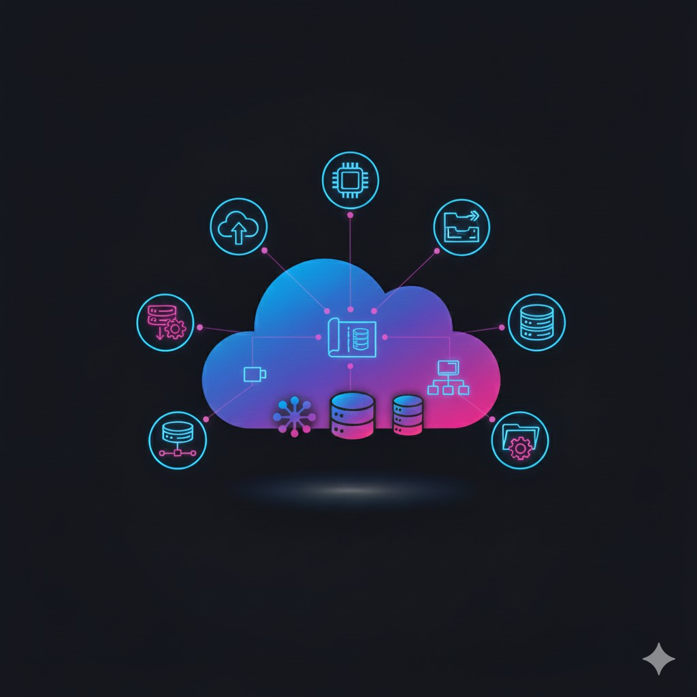

1. Cloud Strategy & Architecture
We work with your leadership and engineers to define a cloud strategy aligned with business goals — including target architecture diagrams, security posture, migration approach, and cost model. Deliverables include reference architecture, runbooks, and a phased migration plan.